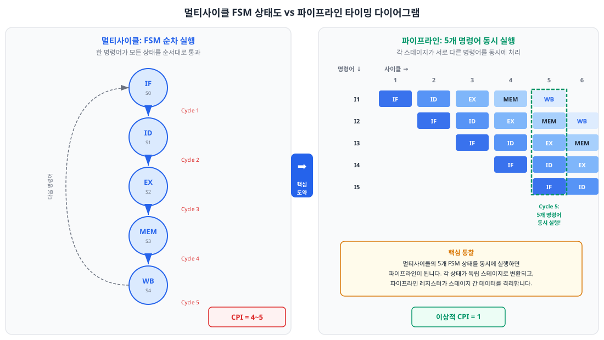
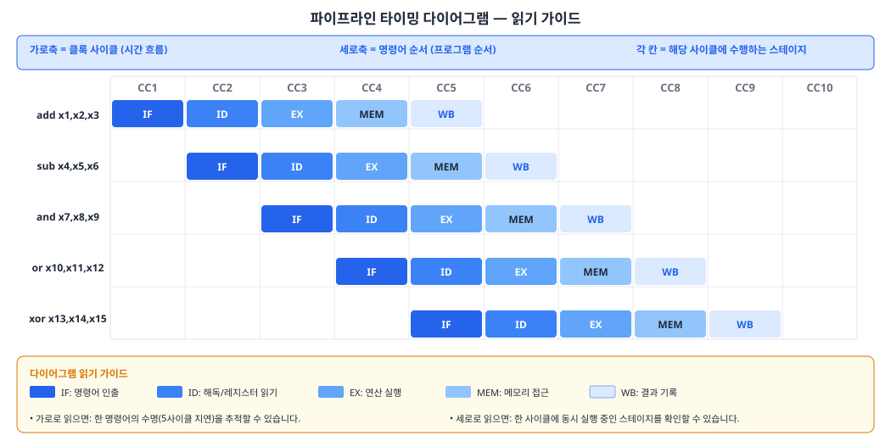
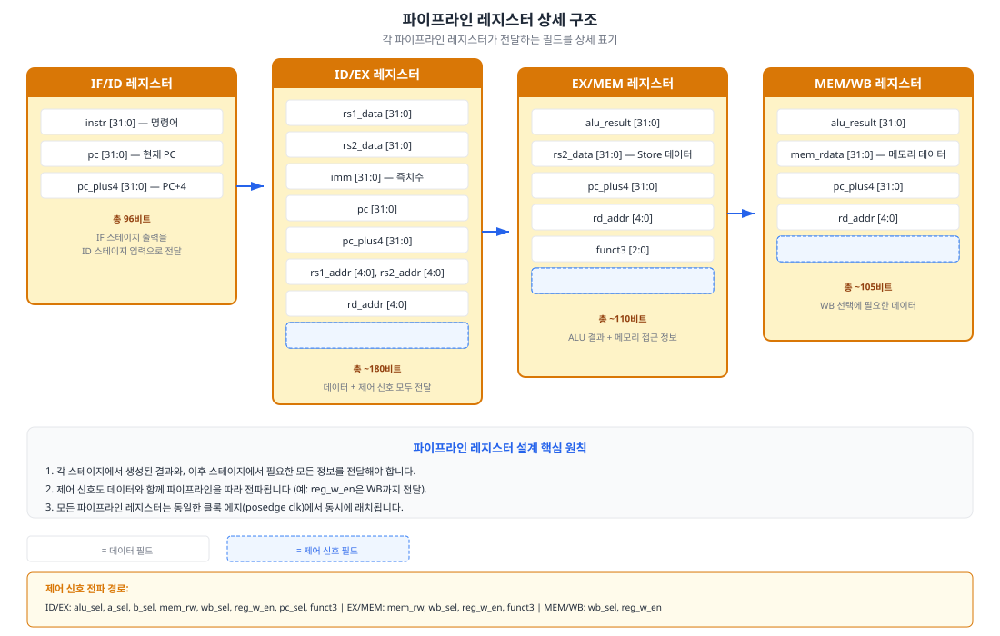

멀티사이클 프로세서의 FSM 상태를 동시에 실행하면 어떻게 될까요? 이 챕터에서는 이 단순한 질문으로부터 출발하여, 5단계 파이프라인의 기본 구조를 설계하고 SystemVerilog로 구현합니다. 해저드 처리는 Ch10~11에서 다루므로, 여기서는 NOP 삽입 방식으로 기본 동작을 먼저 확인합니다.
9.1 멀티사이클에서 파이프라인으로 — 핵심 도약
Chapter 08에서 우리는 멀티사이클 프로세서를 완성했습니다. FSM(유한 상태 기계, Finite State Machine) 기반의 제어 유닛이 IF → ID → EX → MEM → WB 상태를 순차적으로 통과하며, 한 명령어를 4~5 사이클에 걸쳐 처리했습니다. 그 결과 단일 사이클 대비 클록 주파수는 2~3배 향상되었지만, CPI(사이클당 명령어 수, Cycles Per Instruction)는 4~5로 늘어나 전체 성능 향상폭이 기대보다 제한적이었습니다.
여기서 한 가지 핵심적인 관찰을 해봅시다. 멀티사이클에서 EX 상태가 실행되는 동안, IF 하드웨어는 무엇을 하고 있었을까요? 아무것도 하지 않고 유휴(idle) 상태에 있었습니다. ID 하드웨어도, MEM 하드웨어도 마찬가지입니다. 5개의 상태 중 한 번에 하나만 활성화되므로, 전체 하드웨어의 80%가 항상 놀고 있는 셈입니다.
비유: 세탁소 이야기
동네 세탁소를 떠올려 봅시다. 세탁(Wash) → 건조(Dry) → 다림질(Iron) → 접기(Fold) → 배달(Deliver), 5단계로 운영됩니다. 멀티사이클 방식은 한 고객의 빨래가 모든 단계를 완료한 뒤에야 다음 고객의 빨래를 세탁기에 넣는 것과 같습니다. 세탁기가 돌아가는 동안 건조기, 다리미, 접기 테이블, 배달 차량은 모두 놀고 있죠.
파이프라인 방식은 다릅니다. 고객 A의 빨래가 건조기로 넘어가는 즉시, 고객 B의 빨래를 세탁기에 넣습니다. 이상적으로는 5개의 작업이 동시에 진행됩니다. 각 작업 단계(스테이지)의 소요 시간이 동일하다면, 세탁소는 매 단위 시간마다 완성된 빨래 한 벌을 배달할 수 있습니다.
비유의 한계: 실제 파이프라인에서는 앞 명령어의 결과를 뒤 명령어가 필요로 하는 상황(해저드)이 발생합니다. 이는 세탁소에서는 잘 일어나지 않는 문제이며, Ch10~11에서 본격적으로 다룹니다.
멀티사이클 FSM → 파이프라인: 핵심 아이디어
파이프라인의 핵심 아이디어는 놀랍도록 단순합니다. 멀티사이클의 각 FSM 상태를 독립적인 하드웨어 스테이지로 분리하고, 서로 다른 명령어를 동시에 처리하는 것입니다. 이를 위해 두 가지 전제가 필요합니다.
스테이지 간 데이터 격리: 각 스테이지가 서로 다른 명령어를 처리하므로, 스테이지 사이에 중간 결과를 저장하는 레지스터가 필요합니다. 이것이 바로 파이프라인 레지스터(Pipeline Register)입니다.
공유 자원의 분리: 멀티사이클에서 하나의 메모리를 IF와 MEM이 공유했다면(Princeton 구조), 파이프라인에서는 명령어 메모리(IMEM)와 데이터 메모리(DMEM)를 분리해야 합니다(Harvard 구조). 그래야 IF와 MEM이 동시에 메모리에 접근할 수 있습니다.
아래 그림은 이 전환 과정을 시각적으로 보여줍니다. 왼쪽의 멀티사이클 FSM 상태도에서 각 상태가 오른쪽의 파이프라인 타이밍 다이어그램에서 어떻게 동시 실행되는지 비교해 보십시오.

그림 9.1: 멀티사이클 FSM 상태도(좌)와 파이프라인 타이밍 다이어그램(우) 비교. 멀티사이클의 5개 상태가 동시에 실행되면 파이프라인이 됩니다.
CPI 관점에서의 성능 도약
멀티사이클에서 R 타입 명령어의 CPI는 4, Load 명령어는 5였습니다. 파이프라인에서는 파이프라인이 충분히 채워진 이후(steady state), 매 사이클마다 한 명령어가 완료되므로 이상적 CPI = 1을 달성합니다. 같은 클록 주파수에서 CPI가 4~5에서 1로 떨어지면, 성능이 4~5배 향상되는 것입니다.
항목
단일 사이클
멀티사이클
파이프라인
CPI
1
4~5 (명령어 타입별)
1 (이상적)
클록 주기
가장 느린 명령어 기준
가장 느린 스테이지 기준
가장 느린 스테이지 기준
하드웨어 활용률
100% (1사이클 동안)
~20% (1/5 스테이지)
~100% (이상적)
명령어 지연 (latency)
1 사이클
4~5 사이클
5 사이클
주의해야 할 점은, 파이프라인이 개별 명령어의 지연(latency)을 줄이는 것이 아니라는 것입니다. 한 명령어가 IF부터 WB까지 모든 스테이지를 통과하는 데는 여전히 5 사이클이 걸립니다. 파이프라인이 개선하는 것은 처리량(throughput) — 단위 시간당 완료되는 명령어 수입니다. 이 구분은 9.2절에서 더 자세히 분석합니다.
9.2 파이프라인 개념과 성능 분석
9.1절에서 파이프라인의 핵심 아이디어를 살펴보았습니다. 이제 파이프라인의 성능을 수학적으로 분석하고, 이상적 성능과 현실적 한계를 이해해 봅시다.
처리량(Throughput)과 지연(Latency)의 관계
프로세서 성능을 논할 때 두 가지 핵심 지표가 있습니다.
지연(Latency): 하나의 명령어가 파이프라인에 진입한 시점부터 완료될 때까지의 시간. 5단계 파이프라인에서 한 명령어의 지연은 5 × Tstage입니다 (Tstage는 가장 느린 스테이지의 소요 시간).
처리량(Throughput): 단위 시간당 완료되는 명령어 수. 파이프라인이 가득 찬 정상 상태(steady state)에서 처리량은 1 / Tstage입니다.
이 두 지표의 관계를 이해하는 것이 매우 중요합니다. 파이프라인은 지연을 줄이지 않습니다 — 오히려 파이프라인 레지스터의 설정 시간(setup time)과 클록-투-큐(clock-to-q) 지연 때문에 개별 명령어의 지연은 약간 증가합니다. 파이프라인이 개선하는 것은 오직 처리량입니다.
비유: 고속도로 톨게이트
서울에서 부산까지 고속도로를 달리는 한 대의 자동차가 걸리는 시간(지연)은 차선 수와 무관합니다. 그러나 톨게이트를 통과하는 시간당 자동차 수(처리량)는 차선이 많을수록 증가합니다. 파이프라인은 차선을 늘리는 것이 아니라, 고속도로 위에 동시에 더 많은 자동차가 달리도록 하는 것에 가깝습니다.
파이프라인 타이밍 다이어그램 읽기 가이드
파이프라인 동작을 분석하는 가장 강력한 도구는 타이밍 다이어그램(Timing Diagram)입니다. 이 다이어그램은 파이프라인 설계 과정 전반에서 반복적으로 사용되므로, 읽는 방법을 확실히 익혀 두어야 합니다.

그림 9.2: 5단계 파이프라인 타이밍 다이어그램. 가로축은 클록 사이클(시간), 세로축은 명령어 순서. 각 칸은 해당 사이클에 명령어가 수행하는 스테이지를 나타냅니다.
타이밍 다이어그램을 읽는 두 가지 방법이 있습니다.
가로로 읽기 (한 명령어의 수명 추적): 특정 명령어 행을 왼쪽에서 오른쪽으로 따라가면, 그 명령어가 어떤 스테이지를 거쳐 완료되는지 볼 수 있습니다. 예를 들어 첫 번째 명령어 add x1, x2, x3는 CC1에서 IF, CC2에서 ID, CC3에서 EX, CC4에서 MEM, CC5에서 WB를 수행합니다.
세로로 읽기 (한 사이클의 스냅샷): 특정 사이클 열을 위에서 아래로 읽으면, 그 순간 각 스테이지에서 어떤 명령어가 실행 중인지 알 수 있습니다. 예를 들어 CC5에서는 I1이 WB, I2가 MEM, I3가 EX, I4가 ID, I5가 IF를 수행합니다 — 5개 명령어가 동시에 실행 중입니다.
이상적 속도 향상(Speedup) 계산
N개의 명령어를 실행할 때, 파이프라인과 비파이프라인 프로세서의 실행 시간을 비교해 봅시다.
비파이프라인 (멀티사이클): 각 명령어가 k 사이클을 소요한다면, N개 명령어의 총 실행 시간은:
Tnon-pipe = N × k × Tstage
파이프라인 (k단계): 첫 명령어가 파이프라인을 채우는 데 k 사이클이 필요하고, 이후 매 사이클마다 한 명령어가 완료됩니다:
N이 충분히 크면(N >> k), 이 값은 k에 수렴합니다. 즉, 5단계 파이프라인의 이상적 속도 향상은 5배입니다. 이것이 CPI=1의 수학적 의미입니다.
이상적 성능에 도달하지 못하는 이유
현실에서 정확히 5배 속도 향상을 달성하기 어려운 이유는 여러 가지가 있습니다.
스테이지 불균형: 5개 스테이지의 소요 시간이 완벽히 같지 않습니다. 클록 주기는 가장 느린 스테이지에 맞춰야 하므로, 빠른 스테이지에는 유휴 시간이 발생합니다.
파이프라인 레지스터 오버헤드: 각 파이프라인 레지스터에는 설정 시간(tsetup)과 클록-투-큐 지연(tcq)이 있어, 실질적인 스테이지 작업 시간이 줄어듭니다.
해저드(Hazard): 데이터 해저드, 제어 해저드, 구조적 해저드로 인해 파이프라인이 멈추거나(stall) 비워져야(flush) 할 때, 실질 CPI가 1보다 커집니다. 이는 Ch10~12에서 상세히 다룹니다.
이러한 현실적 요인을 반영하면, 실제 CPI는 1.0~1.5 범위에 놓이는 것이 일반적입니다. 구체적인 수치는 프로그램의 명령어 믹스와 해저드 해결 전략에 따라 달라집니다.
9.3 5단계 스테이지 정의
이제 RV32I 프로세서의 5단계 파이프라인에서 각 스테이지가 담당하는 작업을 정확히 정의합니다. 이 정의는 단일 사이클(Ch06)과 멀티사이클(Ch07~08)에서 이미 익숙한 작업들이지만, 파이프라인에서는 각 작업이 독립적인 하드웨어 스테이지로 분리되고, 동시에 서로 다른 명령어를 처리한다는 점이 핵심 차이입니다.
그림 9.3: 5단계 파이프라인 블록도. 각 스테이지 사이에 파이프라인 레지스터(노란색)가 위치하여 데이터를 격리합니다.
스테이지 1: IF (Instruction Fetch, 명령어 인출)
IF 스테이지는 프로그램 카운터(PC, Program Counter)가 가리키는 주소에서 명령어를 인출(fetch)하는 단계입니다. 이 스테이지에 포함되는 하드웨어 구성 요소는 다음과 같습니다.
PC 레지스터: 현재 실행할 명령어의 주소를 보관합니다. 매 클록 상승 에지에서 다음 PC 값으로 갱신됩니다.
명령어 메모리(IMEM): PC 주소를 입력으로 받아 32비트 명령어를 출력합니다. 파이프라인에서는 DMEM과 분리된 Harvard 구조를 사용합니다.
PC+4 가산기: 다음 순차 명령어의 주소를 계산합니다. RV32I에서 모든 명령어는 4바이트(32비트)이므로, PC에 4를 더합니다.
PC 다음 값 선택 MUX: PC+4(순차 실행)와 분기/점프 목표 주소 중 하나를 선택합니다. 분기/점프 처리는 Ch11에서 추가합니다.
IF 스테이지의 출력은 파이프라인 레지스터 IF/ID를 통해 다음 스테이지로 전달됩니다. 전달하는 데이터는 인출된 명령어(32비트), 현재 PC(32비트), PC+4(32비트)입니다.
스테이지 2: ID (Instruction Decode, 명령어 해독)
ID 스테이지는 IF에서 인출된 명령어를 해독(decode)하고, 필요한 데이터를 레지스터 파일에서 읽는 단계입니다.
명령어 디코더: opcode, funct3, funct7 필드를 분석하여 제어 신호를 생성합니다. 이 제어 신호들은 이후 스테이지에서 사용되므로, 파이프라인 레지스터를 통해 전파됩니다.
레지스터 파일 읽기: rs1과 rs2 필드에 해당하는 레지스터 값을 읽습니다. Ch04에서 설계한 비동기 읽기 레지스터 파일을 사용합니다.
즉치수 생성기(Immediate Generator): 명령어 타입(I/S/B/U/J)에 따라 즉치수를 추출하고 32비트로 부호 확장합니다.
중요한 설계 결정이 있습니다. 디코더가 생성하는 제어 신호 중 일부는 EX 스테이지에서, 일부는 MEM 스테이지에서, 일부는 WB 스테이지에서 사용됩니다. 따라서 제어 신호를 용도별로 분류하여, 필요한 스테이지까지 파이프라인 레지스터를 통해 전달해야 합니다. 이것을 제어 신호 전파(control signal propagation)라고 합니다.
제어 신호
사용 스테이지
기능
alu_sel, a_sel, b_sel
EX
ALU 연산 선택, ALU 입력 MUX 제어
mem_rw, funct3
MEM
메모리 읽기/쓰기 제어, 접근 폭
wb_sel, reg_w_en
WB
Write-Back 소스 선택, 레지스터 쓰기 인에이블
스테이지 3: EX (Execute, 실행)
EX 스테이지는 실제 연산을 수행하는 단계입니다. ALU(산술 논리 장치, Arithmetic Logic Unit)가 이 스테이지의 핵심 하드웨어입니다.
ALU: ID/EX 파이프라인 레지스터에서 전달받은 두 피연산자에 대해 alu_sel이 지정하는 연산을 수행합니다. R 타입이면 레지스터 값 간의 연산, I 타입이면 레지스터와 즉치수 간의 연산, Load/Store이면 기저 주소 + 오프셋 계산을 합니다.
분기 비교기: Branch 명령어일 때 rs1과 rs2를 비교하여 분기 성립 여부를 판정합니다.
분기 목표 주소 계산: PC + 즉치수(B 타입) 또는 rs1 + 즉치수(JALR)로 분기 대상 주소를 계산합니다.
EX 스테이지의 출력은 ALU 결과(32비트), rs2 데이터(Store용), PC+4(JAL/JALR용), rd 주소 등입니다.
스테이지 4: MEM (Memory Access, 메모리 접근)
MEM 스테이지는 Load 및 Store 명령어가 데이터 메모리에 접근하는 단계입니다.
Load 명령어: EX에서 계산한 주소로 DMEM에서 데이터를 읽고, funct3에 따라 바이트/하프워드/워드 선택 및 부호 확장을 수행합니다.
Store 명령어: EX에서 계산한 주소에 rs2 데이터를 기록합니다. 바이트 인에이블(byte enable)로 접근 폭을 제어합니다.
기타 명령어: Load/Store가 아닌 명령어는 이 스테이지에서 실질적인 작업 없이 ALU 결과를 그대로 통과(pass-through)시킵니다.
스테이지 5: WB (Write Back, 결과 기록)
WB 스테이지는 파이프라인의 마지막 단계로, 연산 결과를 레지스터 파일에 기록합니다.
WB 멀티플렉서: wb_sel 신호에 따라 세 가지 소스 중 하나를 선택합니다:
WB_ALU: ALU 결과 (R/I 타입 연산)
WB_MEM: 메모리 읽기 데이터 (Load 명령어)
WB_PC4: PC+4 (JAL/JALR — 복귀 주소 저장)
레지스터 파일 쓰기: reg_w_en이 활성화되면, 선택된 데이터를 rd 레지스터에 기록합니다. x0 쓰기는 방지됩니다.
각 명령어 타입별 스테이지 사용 정리
명령어 타입
IF
ID
EX
MEM
WB
R 타입 (ADD, SUB, ...)
명령어 인출
rs1, rs2 읽기
ALU 연산
통과
rd 기록
I 타입 (ADDI, ...)
명령어 인출
rs1 읽기, imm 생성
ALU 연산
통과
rd 기록
Load (LW, LB, ...)
명령어 인출
rs1 읽기, imm 생성
주소 계산
메모리 읽기
rd 기록
Store (SW, SB, ...)
명령어 인출
rs1, rs2 읽기, imm
주소 계산
메모리 쓰기
-
Branch (BEQ, ...)
명령어 인출
rs1, rs2 읽기, imm
비교 + 목표주소
통과
-
JAL
명령어 인출
imm 생성
목표주소 계산
통과
rd=PC+4 기록
LUI
명령어 인출
imm 생성
imm 통과
통과
rd 기록
9.4 파이프라인 레지스터 설계
파이프라인에서 가장 중요한 하드웨어 추가 요소는 파이프라인 레지스터(Pipeline Register)입니다. 이 레지스터들이 없으면, 서로 다른 명령어의 데이터가 뒤섞여 파이프라인이 올바르게 동작할 수 없습니다. 파이프라인 레지스터는 스테이지 간의 경계에 위치하며, 클록 상승 에지에서 한 스테이지의 출력을 캡처하여 다음 스테이지의 입력으로 제공합니다.

그림 9.4: 4개 파이프라인 레지스터의 상세 필드 구조. 각 레지스터가 전달하는 데이터와 제어 신호를 보여줍니다.
파이프라인 레지스터의 역할
파이프라인 레지스터는 두 가지 핵심 역할을 합니다.
데이터 격리(Data Isolation): CC3에서 IF 스테이지가 명령어 I3를 인출하는 동시에, ID는 I2를 해독하고, EX는 I1을 실행합니다. 파이프라인 레지스터가 각 스테이지의 데이터를 분리하므로, 세 명령어의 데이터가 서로 간섭하지 않습니다.
제어 신호 전파(Control Signal Propagation): ID 스테이지에서 생성된 제어 신호 중 일부는 EX에서, 일부는 MEM에서, 일부는 WB에서 사용됩니다. 제어 신호가 해당 스테이지에 도달할 때까지 파이프라인 레지스터를 통해 함께 전달되어야 합니다.
설계 원칙: "뒤에서 필요한 모든 것을 전달하라"
파이프라인 레지스터를 설계할 때 가장 중요한 원칙은 다음과 같습니다. 현재 스테이지에서 생성되었거나 전달받은 정보 중, 이후 어떤 스테이지에서든 필요한 것은 모두 파이프라인 레지스터를 통해 전달해야 합니다.
예를 들어, PC+4 값은 IF 스테이지에서 계산됩니다. 이 값은 WB 스테이지에서 JAL/JALR 명령어의 rd 레지스터에 기록하는 데 사용됩니다. 따라서 PC+4는 IF/ID → ID/EX → EX/MEM → MEM/WB의 4개 파이프라인 레지스터를 모두 거쳐 WB까지 전달되어야 합니다.
IF/ID 파이프라인 레지스터
IF/ID 레지스터는 가장 단순한 파이프라인 레지스터입니다. IF 스테이지가 출력하는 세 가지 데이터를 ID 스테이지로 전달합니다.
필드
비트 폭
용도
instr
32
인출된 명령어 (ID에서 디코딩)
pc
32
현재 PC (분기 주소 계산, 디버그)
pc_plus4
32
PC+4 (JAL/JALR의 rd 기록용, WB까지 전달)
// IF/ID 파이프라인 레지스터
module pipe_reg_if_id (
input logic clk,
input logic rst_n,
// IF 스테이지 출력
input logic [31:0] if_instr,
input logic [31:0] if_pc,
input logic [31:0] if_pc_plus4,
// ID 스테이지 입력
output logic [31:0] id_instr,
output logic [31:0] id_pc,
output logic [31:0] id_pc_plus4
);
always_ff @(posedge clk or negedge rst_n) begin
if (!rst_n) begin
id_instr <= 32'h0000_0013; // NOP으로 초기화
id_pc <= 32'h0;
id_pc_plus4 <= 32'h0;
end else begin
id_instr <= if_instr;
id_pc <= if_pc;
id_pc_plus4 <= if_pc_plus4;
end
end
endmodule
리셋 시 id_instr을 NOP(ADDI x0, x0, 0 = 0x00000013)으로 초기화하는 이유가 있습니다. 리셋 직후 파이프라인이 아직 유효한 명령어로 채워지지 않았을 때, NOP이 해독되면 어떤 레지스터도 변경하지 않으므로 안전합니다.
ID/EX 파이프라인 레지스터
ID/EX 레지스터는 가장 넓은(비트 수가 많은) 파이프라인 레지스터입니다. ID 스테이지에서 디코딩된 데이터와 제어 신호 모두를 전달해야 하기 때문입니다.
필드
비트 폭
용도
rs1_data, rs2_data
32+32
레지스터 파일 읽기 값 (EX에서 ALU 입력)
imm
32
부호 확장 즉치수 (EX에서 ALU B 입력)
pc, pc_plus4
32+32
PC (분기 목표 계산), PC+4 (WB까지 전달)
rs1_addr, rs2_addr
5+5
소스 레지스터 주소 (Ch10 포워딩 비교용)
rd_addr
5
목적 레지스터 주소 (WB까지 전달)
funct3
3
메모리 접근 폭 (MEM까지 전달)
제어 신호 묶음
~15
EX/MEM/WB 스테이지용 제어 신호
rs1_addr과 rs2_addr은 현재(Ch09)에서는 사용하지 않지만, Ch10에서 포워딩(forwarding) 유닛이 "EX 스테이지의 소스 레지스터 vs MEM/WB의 목적 레지스터"를 비교할 때 필요합니다. 미리 설계에 포함시켜 두면, 포워딩 추가 시 파이프라인 레지스터를 수정하지 않아도 됩니다.
제어 신호의 구조화: struct packed 패턴
제어 신호를 스테이지별로 묶어 struct packed로 정의하면, 파이프라인 레지스터 코드가 깔끔해지고 유지보수가 쉬워집니다. 아래는 이 교재에서 사용하는 제어 신호 패키지입니다.
package pipeline_pkg;
// EX 스테이지 제어 신호 묶음
typedef struct packed {
alu_op_t alu_sel; // ALU 연산 선택
logic a_sel; // ALU A: 0=rs1, 1=PC
logic b_sel; // ALU B: 0=rs2, 1=imm
} ctrl_ex_t;
// MEM 스테이지 제어 신호 묶음
typedef struct packed {
mem_rw_t mem_rw; // 메모리 읽기/쓰기
logic br_taken; // 분기 성립 여부
} ctrl_mem_t;
// WB 스테이지 제어 신호 묶음
typedef struct packed {
wb_sel_t wb_sel; // Write-Back 소스 선택
logic reg_w_en; // 레지스터 쓰기 인에이블
} ctrl_wb_t;
endpackage
이렇게 구조화하면 ID/EX 레지스터는 ctrl_ex_t, ctrl_mem_t, ctrl_wb_t 세 묶음을 전달하고, EX/MEM 레지스터는 ctrl_mem_t과 ctrl_wb_t만, MEM/WB 레지스터는 ctrl_wb_t만 전달합니다. 스테이지를 지날수록 소비된 제어 신호가 탈락되어, 파이프라인 레지스터의 폭이 점차 줄어드는 것을 확인할 수 있습니다.
EX/MEM 파이프라인 레지스터
EX/MEM 레지스터는 ALU 결과와 Store용 데이터, 그리고 MEM/WB에서 사용할 제어 신호를 전달합니다.
필드
비트 폭
용도
alu_result
32
ALU 결과 (메모리 주소 또는 연산 결과)
rs2_data
32
Store 명령어의 기록 데이터
pc_plus4
32
JAL/JALR용 (WB까지 전달)
rd_addr
5
목적 레지스터 주소 (WB까지 전달)
funct3
3
메모리 접근 폭 제어
ctrl_mem, ctrl_wb
~6
MEM/WB 제어 신호
MEM/WB 파이프라인 레지스터
MEM/WB 레지스터는 파이프라인의 마지막 레지스터로, WB 스테이지에서 레지스터 파일에 기록할 데이터와 제어 신호를 전달합니다.
필드
비트 폭
용도
alu_result
32
ALU 결과 (R/I 타입의 WB 후보)
mem_rdata
32
메모리 읽기 데이터 (Load의 WB 후보)
pc_plus4
32
PC+4 (JAL/JALR의 WB 후보)
rd_addr
5
목적 레지스터 주소
ctrl_wb
~3
wb_sel, reg_w_en
9.5 해저드 없는 기본 파이프라인
9.1~9.4절에서 5단계 파이프라인의 개념, 스테이지 정의, 파이프라인 레지스터를 설계했습니다. 이제 이 모든 것을 하나의 top-level 모듈로 통합하여, 실제로 동작하는 파이프라인 프로세서를 만들어 봅시다.
단, 이 챕터에서는 해저드(Hazard) 처리를 포함하지 않습니다. 데이터 해저드(Ch10), 제어 해저드(Ch11), 구조적 해저드(Ch12)는 별도의 챕터에서 단계적으로 추가합니다. 해저드 없는 파이프라인을 먼저 동작시키면, 이후 해저드 처리를 추가할 때 어떤 변화가 필요한지 명확히 이해할 수 있습니다.
NOP 삽입 방식의 테스트 프로그램
해저드 처리 없이 파이프라인을 정상 동작시키려면, 프로그램에서 명령어 간 데이터 의존성이 발생하지 않도록 해야 합니다. 가장 간단한 방법은 의존성이 있는 명령어 사이에 NOP(No Operation)을 충분히 삽입하는 것입니다.
5단계 파이프라인에서 데이터 해저드가 발생하는 최대 거리는 2 사이클(EX-EX 포워딩이 없는 경우 3사이클까지)입니다. 따라서 의존성 있는 명령어 사이에 NOP을 3개 이상 삽입하면, 앞 명령어의 결과가 WB를 통해 레지스터 파일에 기록된 후에야 뒷 명령어가 ID에서 읽게 되므로 안전합니다.
위 프로그램에서 add x3, x1, x2는 x1과 x2에 의존합니다. x1에 값을 기록하는 addi x1, x0, 5와 add 사이에 NOP 3개가 삽입되어, addi가 WB를 완료한 후에야 add가 ID에서 x1을 읽습니다.
top-level 모듈 구조
해저드 없는 기본 파이프라인의 top-level 모듈은 다음과 같은 구조로 구성됩니다.
module rv32i_pipeline_top #(
parameter IMEM_DEPTH = 1024,
parameter DMEM_DEPTH = 1024,
parameter IMEM_INIT = ""
)(
input logic clk,
input logic rst_n
);
// ★ 스테이지 1: IF
// - PC 레지스터, IMEM, PC+4 가산기
// - pc_next = pc_plus4 (해저드 미처리: 항상 순차 실행)
// ---- 파이프라인 레지스터: IF/ID ----
// ★ 스테이지 2: ID
// - 명령어 필드 추출, 레지스터 파일 읽기
// - 즉치수 생성, 제어 신호 생성
// ---- 파이프라인 레지스터: ID/EX ----
// ★ 스테이지 3: EX
// - ALU 입력 MUX, ALU 연산
// ---- 파이프라인 레지스터: EX/MEM ----
// ★ 스테이지 4: MEM
// - DMEM 읽기/쓰기, 로드 데이터 부호 확장
// ---- 파이프라인 레지스터: MEM/WB ----
// ★ 스테이지 5: WB
// - WB MUX, 레지스터 파일 쓰기
endmodule
완전한 코드는 code_examples/ch09_pipeline_top.sv에 수록되어 있습니다. 핵심 포인트를 설명합니다.
핵심 설계 포인트
1. PC 갱신은 항상 PC+4
이 버전에서는 if_pc_next = if_pc_plus4로 고정합니다. 분기/점프 명령어가 있어도 무조건 다음 순차 주소로 진행합니다. 분기 처리는 Ch11에서 추가합니다.
2. 레지스터 파일은 ID와 WB가 공유
레지스터 파일은 물리적으로 하나이며, ID 스테이지에서 읽기(비동기), WB 스테이지에서 쓰기(동기)를 수행합니다. WB의 쓰기 포트는 wb_ctrl_wb.reg_w_en과 wb_rd_addr로 제어됩니다.
// 레지스터 파일: 비동기 읽기 (ID), 동기 쓰기 (WB)
assign id_rs1_data = (id_rs1_addr == 5'd0) ? 32'h0 : regfile[id_rs1_addr];
assign id_rs2_data = (id_rs2_addr == 5'd0) ? 32'h0 : regfile[id_rs2_addr];
always_ff @(posedge clk or negedge rst_n) begin
if (!rst_n) begin
for (int i = 0; i < 32; i++)
regfile[i] <= 32'h0;
end else if (wb_ctrl_wb.reg_w_en && wb_rd_addr != 5'd0) begin
regfile[wb_rd_addr] <= wb_rd_data;
end
end
3. 제어 신호의 스테이지별 전파
ID에서 생성된 ctrl_ex, ctrl_mem, ctrl_wb는 각각 다음 경로로 전파됩니다.
ctrl_ex: ID/EX → (EX에서 소비)
ctrl_mem: ID/EX → EX/MEM → (MEM에서 소비)
ctrl_wb: ID/EX → EX/MEM → MEM/WB → (WB에서 소비)
4. 디버그 출력
시뮬레이션 전용으로 $display를 사용하여 매 사이클마다 각 스테이지의 핵심 신호를 출력합니다. synthesis translate_off/on으로 감싸서 합성 시에는 무시됩니다.
시뮬레이션 검증
NOP 삽입 테스트 프로그램을 .hex 파일로 변환하여 IMEM에 로드한 뒤, 시뮬레이션을 실행합니다. 검증 포인트는 다음과 같습니다.
파이프라인 채움(fill): 리셋 해제 후 처음 5 사이클 동안 각 스테이지가 순차적으로 활성화되는지 확인
add x3, x1, x2가 ID에서 x1과 x2를 읽을 때, addi x1은 아직 EX 스테이지에 있고, addi x2는 ID 스테이지에 있습니다. 두 명령어 모두 WB를 완료하지 않았으므로, 레지스터 파일에는 아직 새로운 값이 기록되지 않았습니다. 결과적으로 add는 x1과 x2의 이전 값(0)을 읽게 되어, x3 = 0이라는 잘못된 결과를 냅니다.
이것이 데이터 해저드(Data Hazard)입니다. Ch10에서 포워딩(forwarding)과 스톨(stall)을 도입하여 이 문제를 해결합니다. 현재로서는 "NOP 3개를 삽입하면 안전하다"는 규칙만 기억하면 됩니다.
9.6 본 챕터 요약 및 다음 단계
이 챕터에서 우리는 멀티사이클 프로세서에서 파이프라인 프로세서로의 핵심 도약을 달성했습니다. 멀티사이클의 FSM 상태를 동시에 실행한다는 단순한 아이디어로부터 출발하여, 5단계 파이프라인의 구조를 설계하고 SystemVerilog로 구현했습니다.
핵심 정리
멀티사이클 → 파이프라인: 멀티사이클의 5개 FSM 상태를 독립 스테이지로 분리하고, 서로 다른 명령어를 동시에 처리함으로써 이상적 CPI=1을 달성합니다.
처리량 vs 지연: 파이프라인은 개별 명령어의 지연(5사이클)은 줄이지 않지만, 처리량(throughput)을 최대 5배 향상시킵니다.
파이프라인 레지스터: 4개(IF/ID, ID/EX, EX/MEM, MEM/WB)로 스테이지 간 데이터와 제어 신호를 격리합니다. 제어 신호는 생성 스테이지(ID)에서 소비 스테이지까지 파이프라인을 따라 전파됩니다.
리셋 전략: 비동기 리셋(active-low)으로 통일. 파이프라인 레지스터는 NOP 상태로 초기화합니다.
NOP 삽입: 해저드 처리 없이 정확한 동작을 보장하려면, 데이터 의존성 있는 명령어 사이에 NOP 3개를 삽입합니다. 비효율적이지만 파이프라인 자체의 정확성 검증에 유용합니다.
Harvard 구조 필요: IF와 MEM이 동시에 메모리에 접근하므로, IMEM과 DMEM을 분리해야 구조적 해저드를 방지합니다.
연습문제
[기억] 5단계 파이프라인의 각 스테이지 이름과 약어를 쓰고, 각 스테이지의 주요 하드웨어 구성요소를 하나씩 나열하시오.
[이해] 파이프라인의 처리량(throughput)과 지연(latency)의 차이를 설명하시오. 파이프라인이 개선하는 것은 둘 중 어느 것이며, 그 이유는 무엇입니까?
[이해]reg_w_en 제어 신호가 ID에서 생성되어 WB에서 소비되기까지, 거치는 파이프라인 레지스터를 순서대로 나열하시오.
[적용] 100개의 명령어를 5단계 파이프라인으로 실행할 때 총 사이클 수를 계산하시오 (해저드 없는 이상적 경우). 같은 명령어를 멀티사이클(평균 CPI=4.5)로 실행할 때의 총 사이클 수와 비교하여 속도 향상을 구하시오.
[적용] 다음 프로그램을 해저드 없는 기본 파이프라인에서 정확히 실행하려면, 최소 몇 개의 NOP이 어디에 필요한지 결정하시오: addi x1, x0, 10 → add x2, x1, x0 → sw x2, 0(x1)
[분석] ID/EX 파이프라인 레지스터에 rs1_addr과 rs2_addr을 포함시킨 이유를 설명하시오. 이 필드가 Ch09에서는 사용되지 않는데, 왜 미리 포함시키는 것이 좋은 설계 결정인지 논하시오.
[분석] 파이프라인 스테이지 수를 5에서 10으로 늘리면 (superpipelining), 이상적 속도 향상은 어떻게 변하는가? 실제로는 어떤 문제가 발생하는가?
[평가] Princeton 구조(통합 메모리)의 멀티사이클 프로세서에서 Harvard 구조(분리 메모리)의 파이프라인으로 전환할 때, FPGA 리소스(BRAM) 사용량은 어떻게 변하는가? Basys 3의 BRAM 50개 중 몇 개를 각각 IMEM과 DMEM에 할당하는 것이 적절한지 논하시오.
다음 챕터 예고
다음 Chapter 10 "데이터 해저드와 포워딩"에서는 NOP 없이도 파이프라인이 정확히 동작하도록, 데이터 해저드를 자동으로 감지하고 해결하는 메커니즘을 설계합니다. 포워딩 유닛(Forwarding Unit)이 ALU 결과를 즉시 다음 명령어에 전달하고, Load-Use 해저드에서는 1사이클 스톨(stall)을 삽입하는 로직을 구현합니다. 이번 챕터에서 설계한 파이프라인 레지스터에 enable과 flush 포트를 추가하는 것이 핵심 변경점입니다. Part 4의 최고 난이도 구간이지만, 이번 챕터에서 파이프라인의 기본 구조를 확실히 이해했다면 충분히 도전할 수 있습니다.